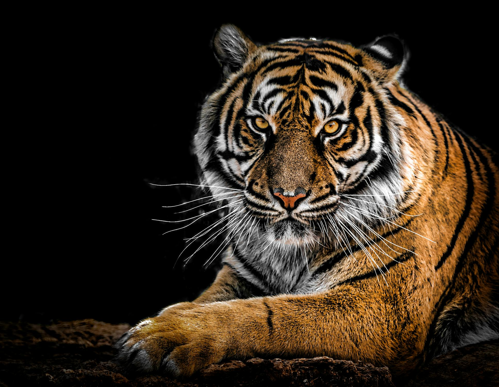

Tiger stripes are unique.Tigers can use their ears to communicate.India has over half the world'population of tigers.One meal a week.The vocal repertoire of tigers is vast. Tigers have been around for over 2 million years. Tigers are endangered.On average two tigers are seized from traffickers every week
Tigers are the largest wild cats in the world.Tigers are carnivores, eating only meat.Tigers are solitary hunters, and generally search for food alone at night.Tigers are good swimmers! A tiger's roar can be heard as far as three kilometres away
Tigers are powerful hunters with sharp teeth, strong jaws and agile bodies. They are the largest terrestrial mammal whose diet consists entirely of meat; the largest tiger ever recorded was an Amur tiger. The tiger's closest relative is the lion. In fact, without fur, it is difficult to distinguish a tiger from a lion